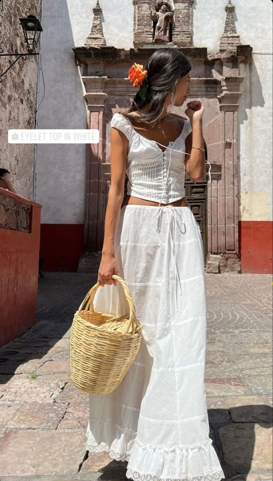
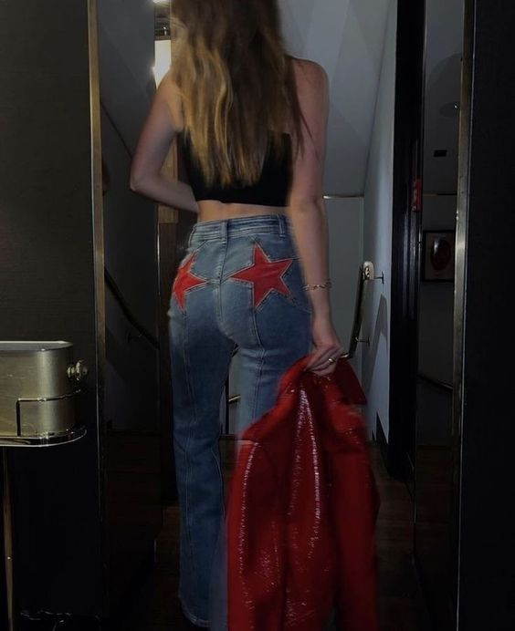

Bienvenid@ a mi página de moda. Aquí exploramos diferentes estilos y tendencias que han marcado época y continúan influyendo en la moda contemporánea.También encontraras información detallada sobre diferentes estilos de moda,sus origenes y las prendas claves para cada una de ellas.
Old Money
El estilo "Old Money" surge de las clases altas tradicionales y se caracteriza por su elegancia y sobriedad. Este estilo emana riqueza y sofisticación sin ser llamativo.
Prendas de alta calidad hechas a medida
Colores neutros y clásicos como el beige, navy y negro
Accesorios discretos y elegantes como relojes de lujo y joyas finas
Materiales nobles como la lana, cachemira y seda
Y2K
El estilo "Y2K" es una reminiscencia de la moda de principios de los 2000, con toques futuristas y nostálgicos. Este estilo es conocido por sus colores vibrantes y elementos tecnológicos.
Colores metálicos y neones
Accesorios tecnológicos como gafas de sol futuristas y gadgets
Prendas ajustadas y brillantes
Estampados gráficos y detalles de inspiración cibernética
Preppy
El estilo "Preppy" está inspirado en las escuelas privadas y universidades de élite de Estados Unidos. Se caracteriza por ser limpio, clásico y sofisticado.
Blazers y camisas polo
Faldas de cuadros y suéteres sobre los hombros
Zapatos náuticos y mocasines
Colores como el azul marino, rojo y blanco
Mexican Core

El "Mexican Core" mezcla elementos tradicionales mexicanos con toques modernos. Este estilo celebra la cultura mexicana a través de colores vivos,vestidos largos y blancos con accesorios con cruces y relicarios.
Colores vibrantes y estampados florales
Accesorios artesanales como sombreros y joyería hecha a mano
Tejidos naturales como algodón y lino
Motivos tradicionales como bordados y patrones aztecas
Star Girl

El estilo "Star Girl" es glamoroso y lleno de brillo, inspirado en las estrellas de Hollywood y la alta costura. Este estilo busca siempre destacar y llamar la atención.
Prendas con lentejuelas y brillos
Vestidos largos y elegantes
Zapatos de tacón alto y accesorios llamativos
Colores metálicos y tonos joya
Casual
El estilo "Casual" es cómodo y relajado, perfecto para el día a día. Este estilo se caracteriza por su simplicidad y funcionalidad sin perder el toque de moda.
Jeans y camisetas básicas
Zapatillas y sandalias cómodas
Prendas de algodón y tejidos suaves
Colores neutros y diseños simples
Office Siren
El estilo "Office Siren" está tendencia esta influenciado por ropa que se usaría comúnmente en una oficina, busca lucir elegante y sensual. Este estilo combina prendas clásicas con toques modernos.
Trajes de pantalón y falda
Blusas de seda y camisas elegantes
Tacones y zapatos de vestir
Colores neutros con detalles en tonos vivos
Mi It Girl favorita
Para finalizar tenemos a una de mis It Girl* favoritas, Bella Hadid una de las modelos mas famosas y mejor pagadas en la industria de la moda: algunos de sus mejores oufits.
*Las it girls son mujeres que tienen un magnetismo innato, y esto es algo que no se puede copiar,
comprar o imitar ya que surge de una actitud natural.
Tienen “algo” propio y auténtico que, al ser tan genuino, se vuelve ultra atractivo para el resto.
fit 1
fit 2
fit 3
fit 4
fit 5
fit 6
Gracias por leer mi pagina, espero hallas disfrutado el contenido.